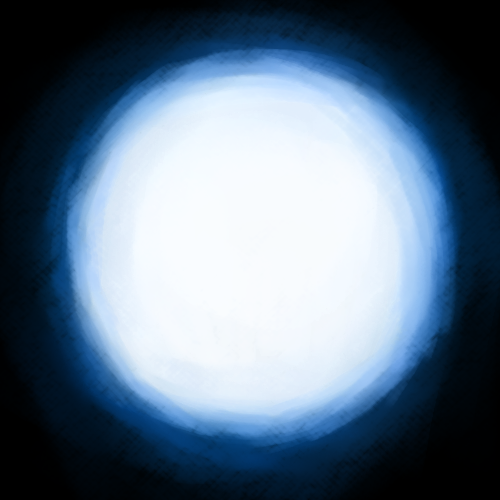

The most well known white dwarf phenomeon is a special type of supernova. The type 1a supernova occurs once the white dwarf exceeds 1.4 solar masses, the Chandrasekhar limit. At this point, the density is so great that the electrons making up the white dwarf are compressed so tightly that they move close to the speed of light.
White dwarfs maintain hydrostatic equilibrium through pressure that comes from the movement of its electrons. However, since they cannot move faster than the speed of light, pressure is capped here, and as the white dwarf continues mass accretion, gravity overcomes pressure, resulting in a supernovav that obliterates the white dwarf.
Type 1a supernovae are standard candles; their known luminosities are used to calculate distances across the cosmos. Hence, they are used in calculating the Hubble constant, or the rate of the Universe’s expansion.